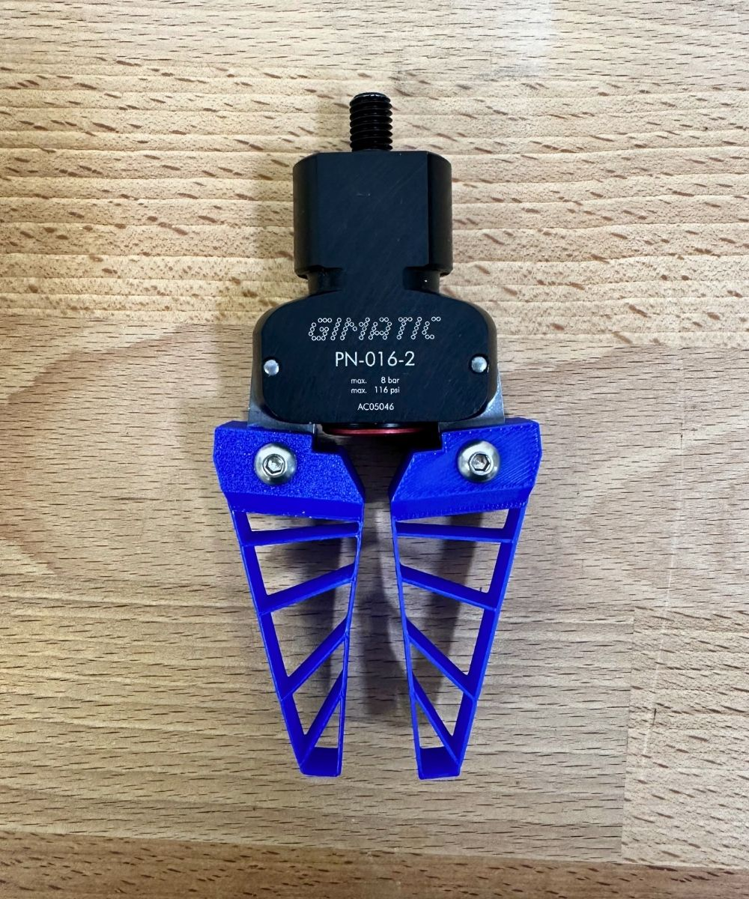
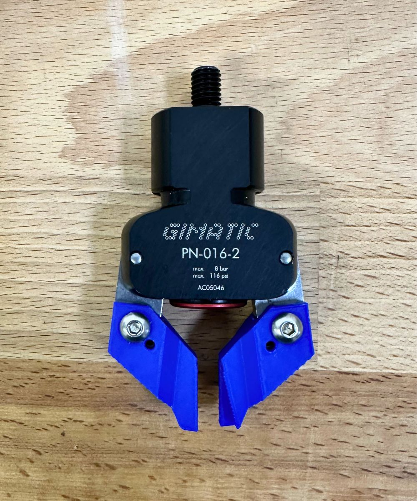
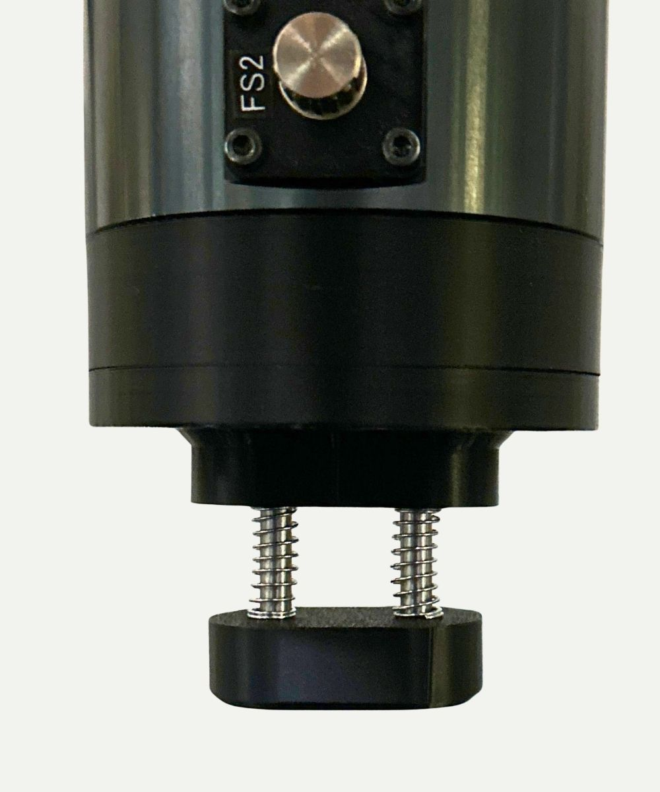
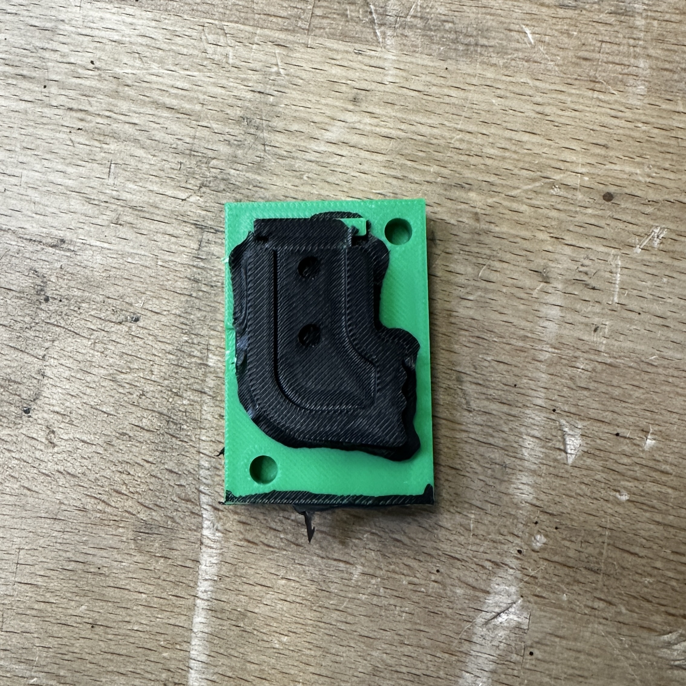
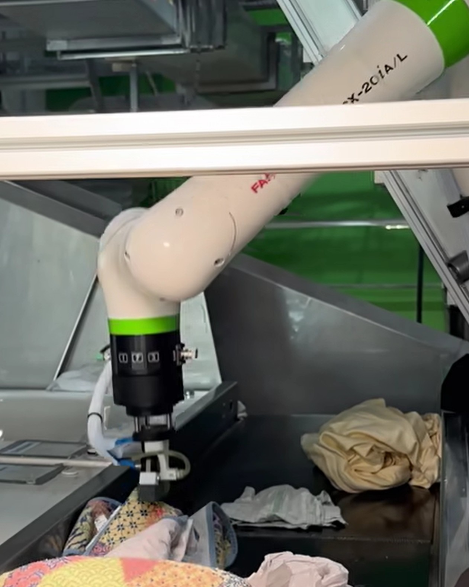
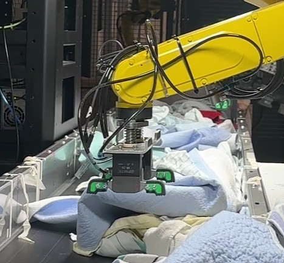

Flat-Surface Textile Gripper
Development of a robotic gripper concept for picking deformable textiles from flat surfaces. The project focused on turning a broad handling problem into a functional mechanical concept through rapid prototyping, silicone casting, friction-based gripping, spring-assisted contact pressure, and iterative testing.

Overview
The goal of this project was to develop a gripper that could reliably pick textile pieces from flat surfaces. This is difficult because textiles are deformable, irregular, and often hard to separate from the surface, especially when the available gripping point is close to an edge or corner.
The final concept combines a silicone-based flat-surface gripper with a spring-assisted mechanism. The silicone part increases friction and adapts to the textile surface, while the spring mechanism helps generate contact pressure after closing so the textile does not slip or fall during handling.
My contribution
I led the mechanical development and iteration of the gripper concept. Some ideas were developed collaboratively, but I was responsible for translating the concepts into physical prototypes, testing them, understanding the failure modes, improving the design, and pushing the concept toward a product-ready implementation.
- Tested existing and early-stage solutions to understand the real gripping problem.
- Developed and evaluated different mechanical concepts for flat-surface textile pickup.
- Designed and iterated prototypes using CAD, 3D printing, silicone casting, and assembly testing.
- Improved the gripper and spring mechanism to increase friction and contact pressure after closing.
- Adapted the concept for integration into larger robotic laundry-sorting prototypes.
- Worked on the transition from functional prototype to a more robust, manufacturable final design.
Engineering challenges
Gripping reliability
- The initial problem was very broad: reliably picking textiles from flat surfaces.
- Textiles behave inconsistently due to folds, wrinkles, thickness differences, and edge conditions.
- The gripper had to generate enough friction after closing so the textile would not slip or fall.
- Difficult grip cases, such as textile corners and edges, had to be handled reliably.
Product-oriented design
- The mechanism had to become more than a working prototype: it needed to be robust and repeatable.
- The silicone mold process had to be improved to avoid imperfections, bubbles, and inconsistent parts.
- Small manufacturing details had a large effect on the quality and repeatability of the silicone gripper.
- The final design moved toward an overmolded silicone concept for better durability and product integration.
Design process
Defined what the gripper needed to achieve in the real application: picking textile pieces from flat surfaces, holding them securely, and fitting into a robotic handling process.
Tested current solutions and observed where they failed, especially with low-friction contact, textile edges, corners, and inconsistent folds.
Built and evaluated several gripper concepts to understand which mechanical principles could create enough contact, friction, and pressure for reliable pickup.
Refined the silicone gripper geometry and spring-assisted mechanism based on test results, focusing on reliability, simplicity, and integration into the larger robotic system.
Improved the mold design and silicone casting process, then moved toward an overmolded silicone concept for the final design to increase durability and production readiness.
Prototype development




Functional testing
Example test showing a difficult grip case close to the textile corner. These edge and corner cases were especially useful for evaluating whether the gripper created enough friction and pressure to hold the textile after closing.
Result
The resulting gripper concept was used in two deployed robotic prototype systems. A newer version was later developed for the upcoming final product deployment, using an overmolded silicone concept to improve robustness, durability, and manufacturability.
The project was especially valuable because it transformed a broad and undefined handling problem into a concrete mechanical product concept through testing, iteration, and adaptation to real-world manufacturing and deployment constraints.
Integration

